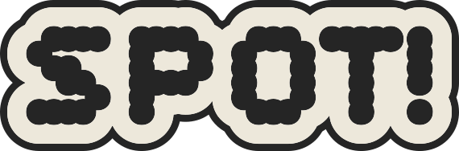
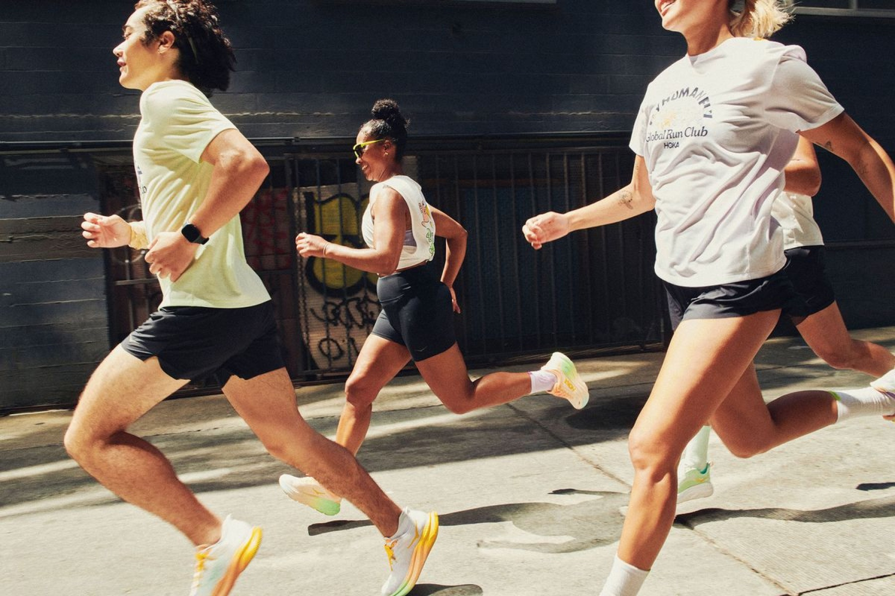
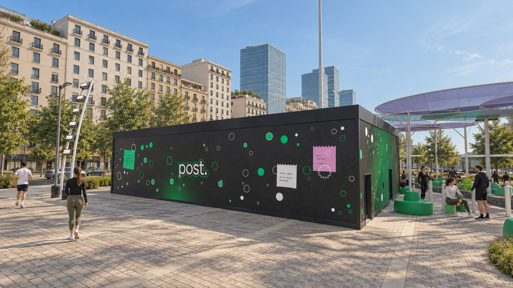
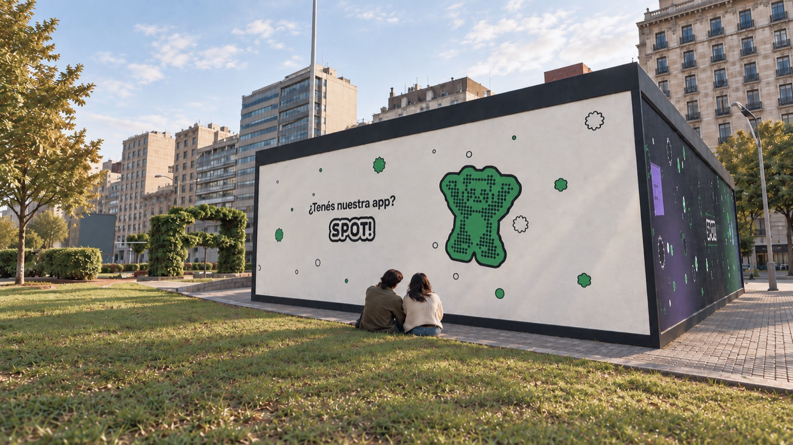
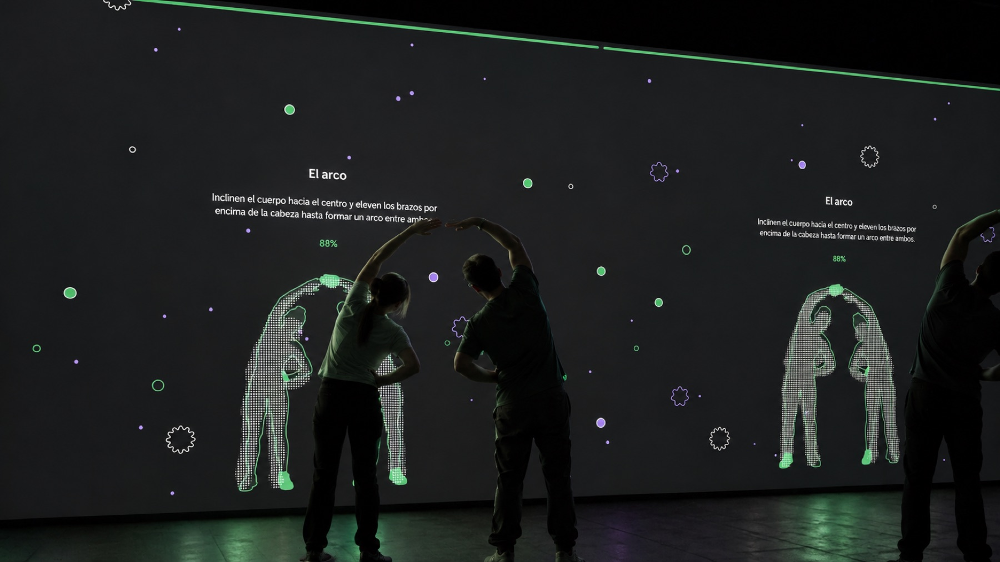
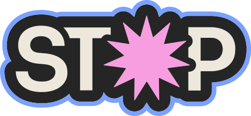

Acerca de

Una marca en constante movimiento
Brand Spirit
Spot es una marca dedicada a realizar experiencias multimediales relacionadas a las comunidades de deportes de recorrido*Deportes de recorridoRefiere a aquellos deportes que se realizan recorriendo distancias largas, como pueden ser el running, el ciclismo, el patinaje, el trekking y decenas de variantes más..
Spot nació como una forma de conectar a las personas que quieren realizar deportes de recorrido con su propio entorno. Sabemos que salir no es un acto aislado: hay lugares, recorridos y personas que cruzan nuestro camino todo el tiempo. Es por eso que Spot está ahí para ayudarlos. Ya sea para encontrar grupos nuevos, descubrir experiencias y eventos deportivos que los interpelen, motivarlos a mantener su ritmo o simplemente decirles dónde encontrar un baño cerca, Spot los va a acompañar en el recorrido.
Misión y visión
Conectar personas, lugares y momentos alrededor del movimiento.
Hacer de los deportes de recorrido por la ciudad un tercer lugar para quienes los realizan, tanto para principiantes en su primer día como para los atletas más experimentados.

Comienzos
en Compañía,
Comunidad &
Comodidad
Brand Spirit
Spot funciona como una marca paraguas con identidad propia, la cual está aplicada principalmente a la app. Sin embargo, ha desarrollado dos submarcas que forman parte de todo el ecosistema de Spot: se tratan de Post y Stop.
Post es la experiencia multimedia de Spot que acompaña el momento que llega después del recorrido. Si Spot se ocupa de lo que pasa antes y durante, Post se ocupa de lo que viene tras la meta: el descanso. Se trata de una cabina con pantallas LED por dentro y por fuera que se instala al final de carreras largas para recordarle a cada deportista, de forma lúdica, que recuperarse también es parte del entrenamiento.
Conocé más sobre POST



Stop es el evento anual de Spot: una parada en el camino para celebrar lo recorrido. Alrededor de una carrera nocturna, propone una experiencia social, lúdica y reflexiva donde corredores y acompañantes se encuentran, se divierten y se toman un momento para valorar todo el esfuerzo que los trajo hasta ahí. Si Spot acompaña el camino y Post cuida el después, Stop es la pausa que les da sentido a los dos.
Conocé más sobre STOP KM10Parada anteriorArquigrafía Siguiente paradaManual de Voz y TonoKM2© Copyright 2026 Spot. Todos los derechos reservados